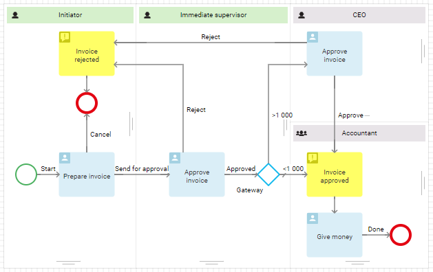
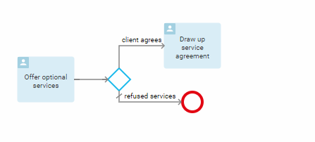
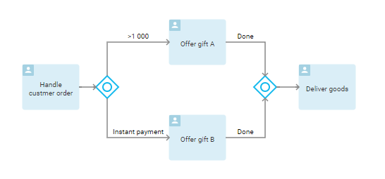
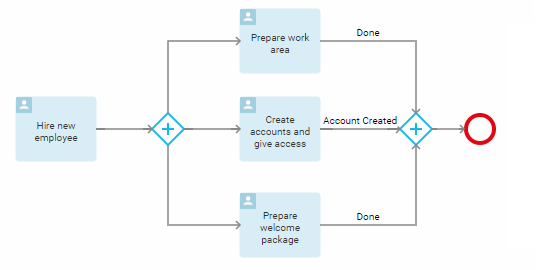
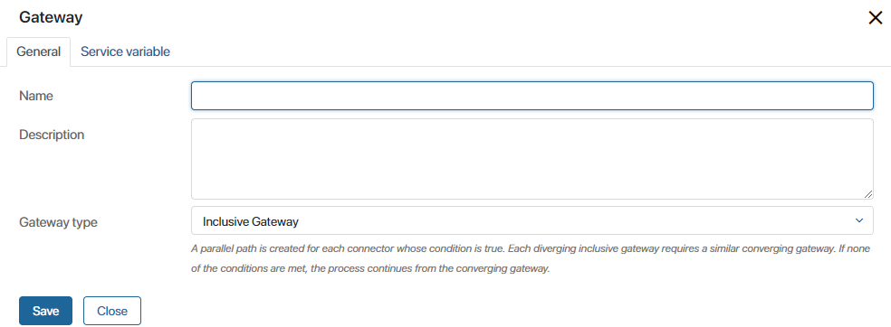
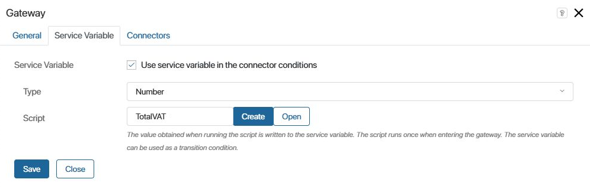
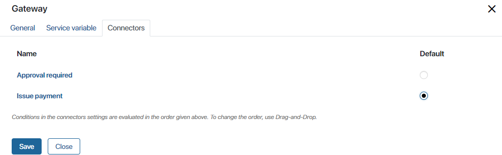
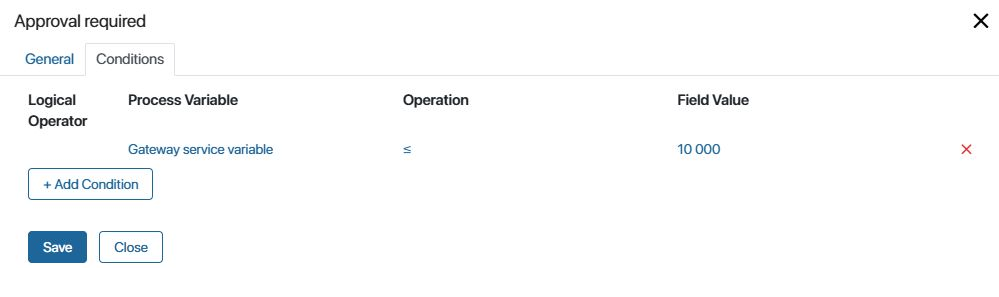
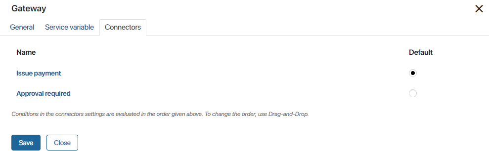

Gateways represent decision points in a process. They split or merge the flow of the process and control which path will be taken depending on certain conditions.
Suppose an employee has drafted an invoice. If the amount is large, it must be approved not only by the employee’s immediate supervisor but also by the CEO. If the amount is insignificant, the applicant will be given the money immediately after the supervisor’s approval.

Exclusive gateway
An exclusive gateway activates only one outgoing connector.
Let’s take a closer look at how it works. First, you specify the conditions for the outgoing connectors. To learn more about it, see Connectors.
When the process flow reaches the gateway, the system evaluates the conditions and selects the connector that meets the condition. The conditions are evaluated in the order they appear in the gateway settings, on the Connectors tab.
начало внимание
An exclusive gateway requires a default connector to be specified for the OR condition. If the specified conditions are not met, the process will be directed to this connector.
конец внимание
For example, in the sales process, a salesperson may offer optional services to the client. Depending on the decision of the buyer, the process will either end, or the salesperson will be assigned the task of drawing up a service agreement.

Inclusive gateway
An inclusive gateway activates one or more process paths that meet the specified conditions.
For example, after an operator accepts an order, the following alternative flows can be activated depending on the conditions:

- If the order amount is > 1000 dollars, the operator will add gift A to the order.
- In case of instant payment, the buyer will be offered gift B.
- If both conditions are met, the buyer will receive the two gifts.
- If no conditions are met, the system will skip the gateway operations and immediately assign the Deliver the goods task.
начало внимание
All process paths outgoing from an inclusive gateway must come to a similar gateway.
конец внимание
Parallel gateway
A parallel gateway activates all of the outgoing connectors. This gateway is very different from the ones described above. It does not evaluate the conditions of the connectors but is used to split the process into several flows that will be executed simultaneously.
For example, after a new employee is hired, the office manager will have to prepare the work area, the system administrator will create an account in the corporate system, and the HR specialist will prepare a welcome package for the newcomer. All these tasks can be performed simultaneously, therefore, to describe the process, it is advisable to choose a parallel gateway.
начало внимание
All the process paths originating from a parallel gateway must come to a similar gateway.
конец внимание

Gateway settings
You can rename gateways, add a description, change the type, as well as set the order in which connectors conditions will be evaluated. To open the settings window, click on the gateway shape on the process diagram.
General Tab

- Name. In this field, you can specify the name of the gateway that will be displayed in the process diagram
- Description. Here you can describe how exactly the gateway works
- Gateway type. A drop-down list that allows you to change the gateway type.
Service Variable tab
The Service Variable tab is available for exclusive and inclusive gateways. Using a service variable, you can define which connectors the process will follow. The value of this variable is calculated with a script.

For example, for an invoice approval process you can create a Total including VAT variable. If the variable’s value is higher or equal to 10 000, then the process should take the Approval required path. In all the other cases, the process will go by the Issue payment path.
To run the example described, set the following gateway settings:
- Check the User service variable in connector conditions option.
- Specify the variable type. You can only use String, Number, and Yes/No switch type variables. In our case, the type is Number, since the variable must store the total amount of an order including VAT.
- Add a script to calculate the variable’s value. For that, either click Create or select an existing script from the list. Specify its name, once again click on Create, and then click Open. The Scripts tab will open, where you can use TypeScript to create your script. For more information on creating scripts, see BRIX TS SDK.
начало внимание
Using Global or Namespace constants in scripts restricts the export of system components. Read more about it in the Global constants in scripts article.
конец внимание
- Save and check the script. If there are any errors, the editor will underline them. Scripts with errors cannot be published.
- Once the script is published, it will be executed and the amount including VAT will be calculated automatically when the process reaches the gateway.
In our example, the process should activate the Issue payment connector if the total amount is less than 10 000. In all the other cases, the Approval required connector will be activated.
- To implement this logic, define the conditions of your connectors. To do so, open the Connectors tab of the gateway’s settings window.

- Select the Issue payment connector as the default one.
- Click on the Approval required connector in order to specify its condition.
- In the opened window, go to the Conditions tab and click +Condition.

- Process Variable. Select the Gateway service variable.
- Operation. Specify the operator for checking the condition.
- Field Value. Enter the required value.
- Save the settings.
Now, as the process progresses and reaches the gateway, the system will automatically calculate the value of the Total including VAT variable by using the script. With a value higher than or equal to 10 000, the process flow will take the Approval required path.
Using a service variable allows you to make the process diagram more readable because the script is contained within the gateway instead of being added to the diagram as a separate shape.
Connectors tab
This tab is available only for exclusive gateways. Here you can specify the order in which the conditions will be evaluated. Also specify a default connector for the process to follow if the specified conditions are not met. By clicking on a connector’s name, you can go to its settings.

For more details on how the conditions are configured, see the Connectors article. The usage of gateways with one or more connector conditions can be found in the Connector use cases article.
Exclusive gateway in a repeated step
You can use an exclusive gateway for an action that is repeated several times in a business process. To prevent the process from looping, such an action should not be performed more than 100 times. You can bypass this limitation. To do this, use a timer to gradually start the repeated steps. Read more about this in the Possible process execution errors article.